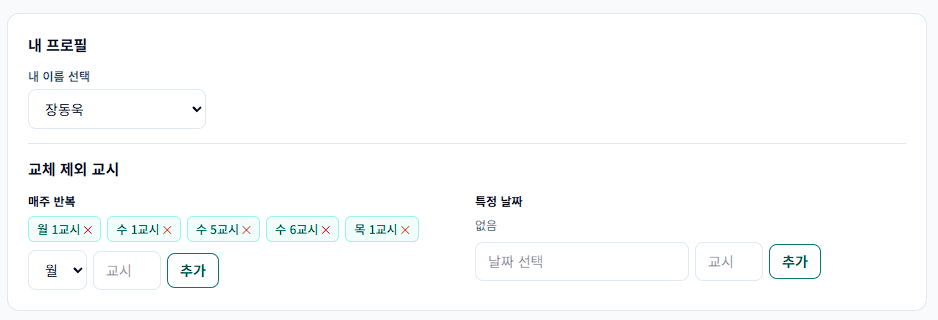
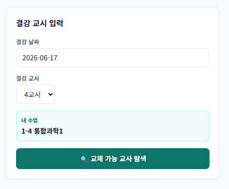
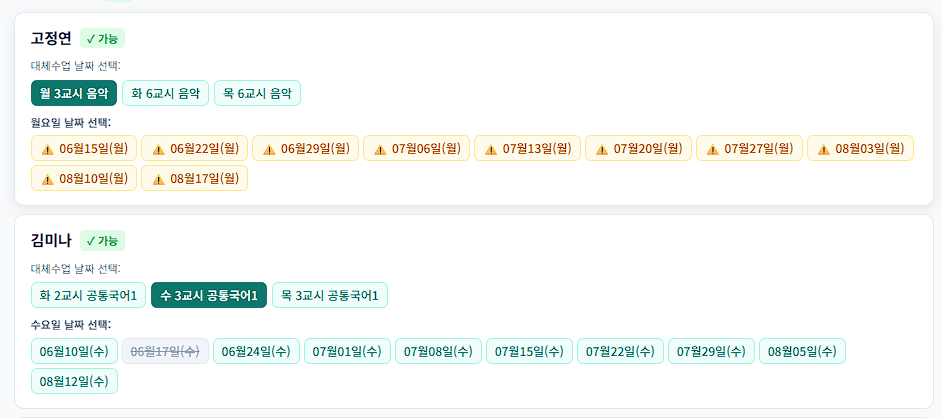
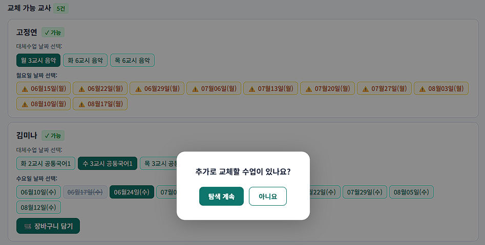
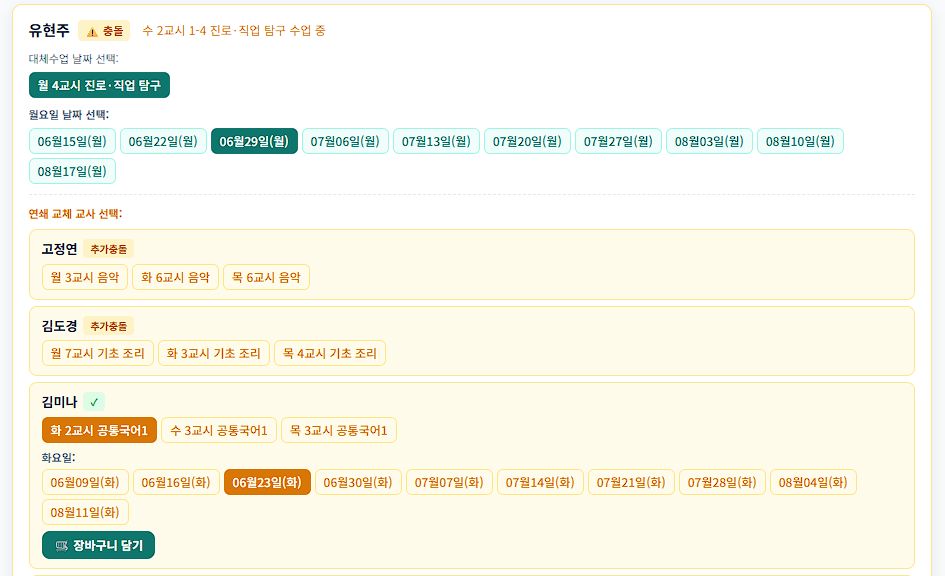
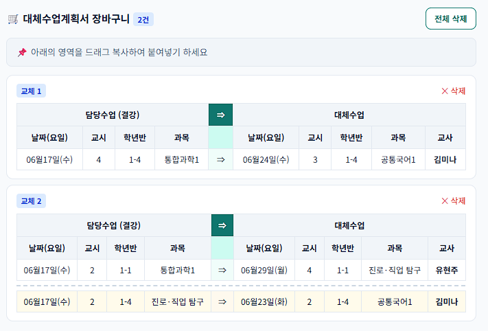

① 내 이름 선택
상단 드롭다운에서 본인의 이름을 선택합니다. 이후 탐색 시 내 수업 정보가 자동으로 표시됩니다.
② 교체 제외 교시 설정
교체 후보에서 제외할 교시를 미리 등록해 두면 탐색 결과에서 해당 교시는 표시되지 않습니다.
③ 특정 날짜 제외
매주 반복이 아닌 특정 날짜의 특정 교시만 제외하려면 오른쪽 특정 날짜 항목에 날짜와 교시를 입력 후 추가합니다.


같은 학급 수업을 담당하는 교사 목록이 나타납니다. 각 항목의 의미는 아래와 같습니다.

교사와 날짜를 선택한 후 장바구니 담기 버튼을 누르면 해당 교체 항목이 저장됩니다.

결강 교시에 다른 수업이 있는 교사(⚠️ 충돌)도 연쇄 교체를 통해 교체할 수 있습니다.

장바구니 탭에서 교체 항목 전체를 확인할 수 있습니다. 각 항목은 담당수업(결강)과 대체수업이 표로 정리되어 있습니다.
불필요한 항목은 각 항목 우측의 ✕ 삭제 버튼으로 제거하거나, 상단 전체 삭제 버튼으로 모두 지울 수 있습니다.